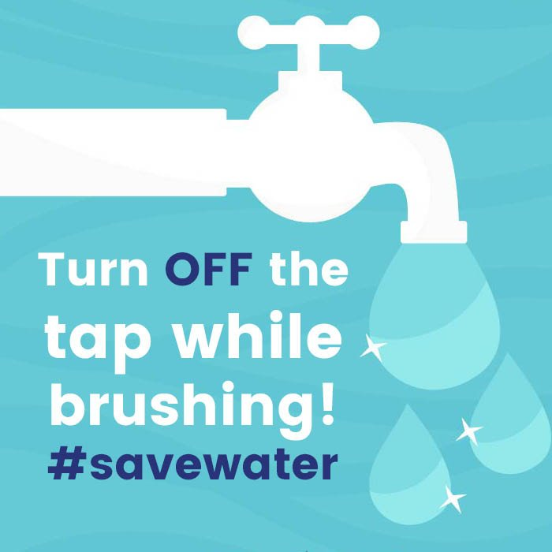
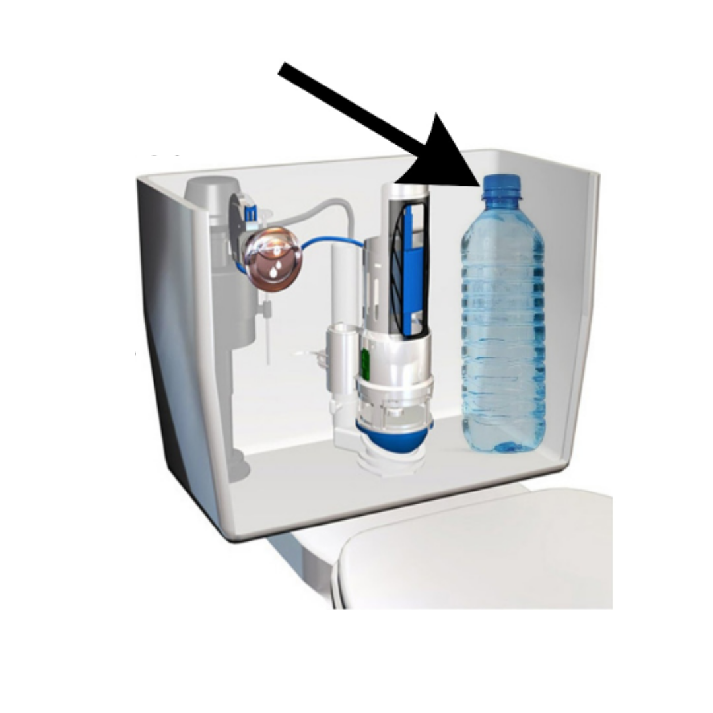
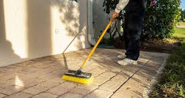
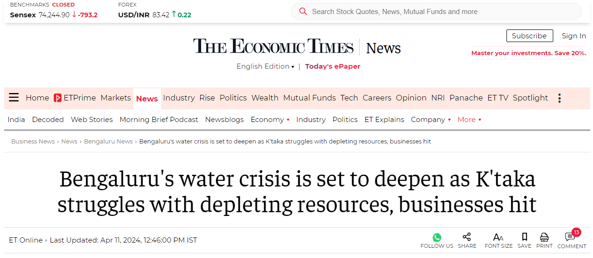

SAVE WATER BANGALORE
Step 1!
Water is a precious resource essential for all forms of life. It's vital for ecosystems, agriculture, industries, and our daily lives. However, with growing population and increasing demands, freshwater sources are facing significant challenges. Understanding the importance of water conservation is crucial for preserving this valuable resource for future generations.
>Step 2!!
Picture this: as you begin your day, standing at the sink with toothbrush in hand, there's a tiny but powerful act you can do for our planet. Turn off the faucet while brushing your teeth. It's a small gesture with a big impact. Each drop saved helps conserve water for the streams, rivers, and oceans that sustain life. So, next time you brush, remember - every drop counts!
Step 3!!
"Increase your toilet's water efficiency by placing a plastic bottle filled with pebbles or sand into the tank. This clever trick reduces the amount of water used with each flush, helping to conserve water without sacrificing functionality. As the bottle displaces water, your toilet will use less water per flush, saving gallons over time. It's a cost-effective and environmentally friendly solution that anyone can implement easily. Take a small step towards sustainable living by adopting this simple yet impactful practice today."
Step 4!!
Picture this: a tranquil morning, with sunlight dappling the quiet streets. In this peaceful scene, you reach for a broom instead of a hose, ready to tackle the day's cleaning. With each sweep, you're not just tidying driveways and sidewalks; you're conserving water, one stroke at a time. As the broom whispers its eco-friendly mantra, you become a steward of sustainability, inspiring others to follow suit. Together, with a simple tool and mindful actions, we can nurture our planet and build a brighter, greener future.
The Economic Times

Bengaluru's summer of 2024 is just a sneak peek into the future, if you go by what the experts predict.
The city, which lost its green cover by 66 per cent, water bodies by 74 per cent, and witnessed a growth
of 584 per cent in built-up area – as per Centre for Ecological Sciences (CES) of Indian Institute of
Science – buckled under the El Nino's assault this summer.
Things will get worse if the trend continues: By 2038, CES predicts that forests will be reduced to 0.65
per cent (as per last census in 2022, it is 3.32 per cent). Bengaluru city will be choked with paved
surfaces (more than 98 per cent) and 69.90 per cent (from 55.71 per cent in 2022) in Bengaluru Urban
will be paved areas by 2038, said a study by the CES.
"If Power was the reason for previous World War Surely Water will be the one for the future."
Stats
Water Conservation Facts

There is the same amount of water on Earth as there was when the Earth was formed. The water from your faucet could contain molecules that dinosaurs drank.
A person can typically survive about a month without food, but only endure about a week without water, highlighting the critical importance of this life-sustaining resource.
Water expands by approximately 9% when it freezes. This unique property causes frozen water, or ice, to be lighter than liquid water, resulting in its buoyancy and ability to float.
Frequently Asked Questions
Question 1: Why is water conservation important?
Answer: Water conservation helps preserve freshwater resources, protect ecosystems, and ensure access to clean water for future generations.
Question 2: What are some easy ways to conserve water at home?
Answer: Simple steps like fixing leaks, using water-saving appliances, and practicing mindful water usage habits can contribute to water conservation at home.